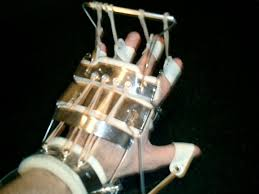

Dave has only recently become an inspiration to me, but an inspiration none the less. I grew up listening to music that was similar to his. He was a founding member of Metallica, arguably the biggest metal band of all time. So it was natural for me to transition over to his current band Megadeth. Both bands have been a major reason as to why I started playing guitar. I would watch videos of him playing concerts and it would blow my mind how fast he could play such complex guitar parts and sing at the same time. His attitude can be like night and day. He could tell someone off during a concert or go off on some random tangent, but then be the most down to Earth guy during interviews.
He is very dedicated to his work, and I try to be like that too. In 2002, he laid his arm on the hard edge of a hospital chair and fell asleep like that. When he woke up, his left hand was completely numb. He had somehow cut off the circulation to the nerves in his arm. He went through intense physical therapy and weight training for 17 months before he could even hold a guitar again. He then preceeded to completely relearn how to play guitar and now has complete use of his arm again, after doctors told him that he's be lucky if he got 80% use of his arm back.

His hand in the cast